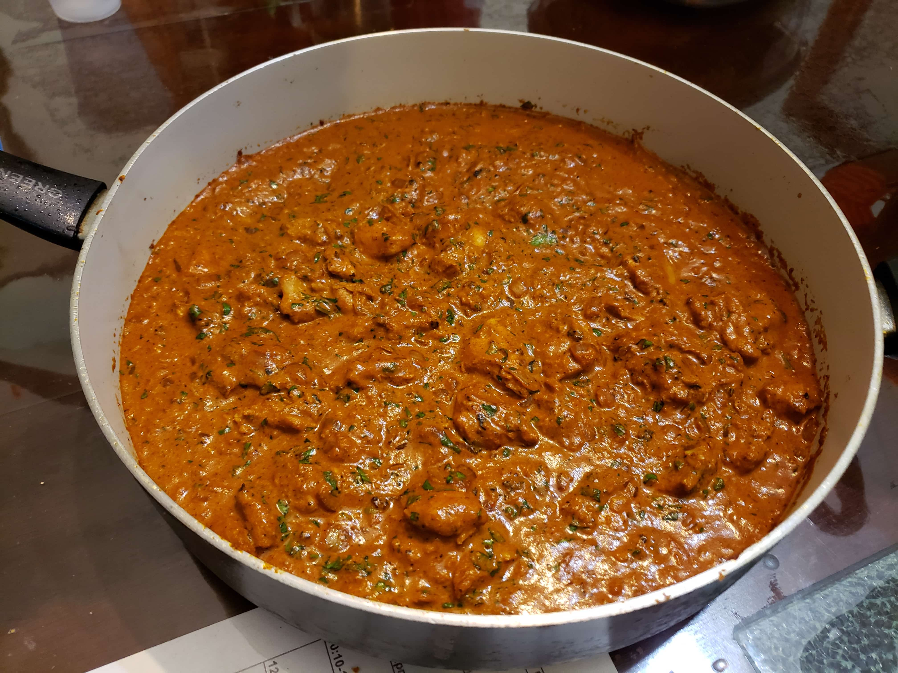

Chicken Tikka Masala

Ingredients:
Marinade:
- 1 3/4 lbs Chicken thighs, boneless and skinless (about five thighs), cut into bite-sized cubes
- 1 cup Plain yogurt
- 1 1/2 tbsp Garlic, grated or garlic paste
- 1 tbsp Ginger, grated or ginger paste
- 2 tsp Garam masala
- 1 tsp Turmeric
- 1 tsp Cumin
- 1 tsp Kashmiri chili powder
- 1 tsp Salt
Sauce:
- 2 tbsp Canola oil
- 2 tbsp Butter or Ghee
- 2 small Onions or 1 large Onion
- 1 1/2 tbsp Garlic, grated, minced, or garlic paste
- 1 tbsp Ginger, grated, minced, or ginger paste
- 1 1/2 tsp Garam masala
- 1 1/2 tsp Cumin
- 1 tsp Turmeric
- 1 tsp Ground coriander
- 14 oz Tomato puree or Tomato sauce
- 1 tsp Kashmiri chili powder
- Optional: up to 1 tsp Cayenne chili powder
- 1 tsp Salt
- 1 1/4 cup Heavy cream
- 1 tsp Brown sugar
- Optional: 1/4 cup Water
- 4 tbsp Cilantro, chopped
Instructions:
- Combine all the marinade ingredients together. Let marinate overnight.
- Heat the oil over medium-high heat in a large pan. In small batches, sear the chicken cubes for about 3 minutes on each side, making sure not to overcrowd the pan. Remove the chicken from the pan and reserve for later.
- Melt the butter or ghee in the same pan. Fry the diced onions until translucent while scraping up any browned bits stuck on the bottom of the pan.
- Add garlic and ginger and sauté for about one minute or until fragrant, then add garam masala, cumin, turmeric and coriander. Fry for about 20 seconds until fragrant, while stirring constantly.
- Pour in the tomato puree, chili powders and salt. Let simmer for about 10-15 minutes, making sure to stir occasionally until sauce thickens and becomes a deep brown red colour.
- Optional: Remove from heat, scoop mixture into a blender and blend until smooth. You may need to add a couple tablespoons of water to help it blend (up to 1/4 cup). Work in batches depending on the size of your blender.
- Stir the cream and sugar into the sauce. Add the chicken and its juices back into the pan and cook for an additional 8-10 minutes until chicken is cooked through and the sauce is thick and bubbling. Pour in the water to thin out the sauce, if needed.
- Remove from heat and stir in the cilantro.